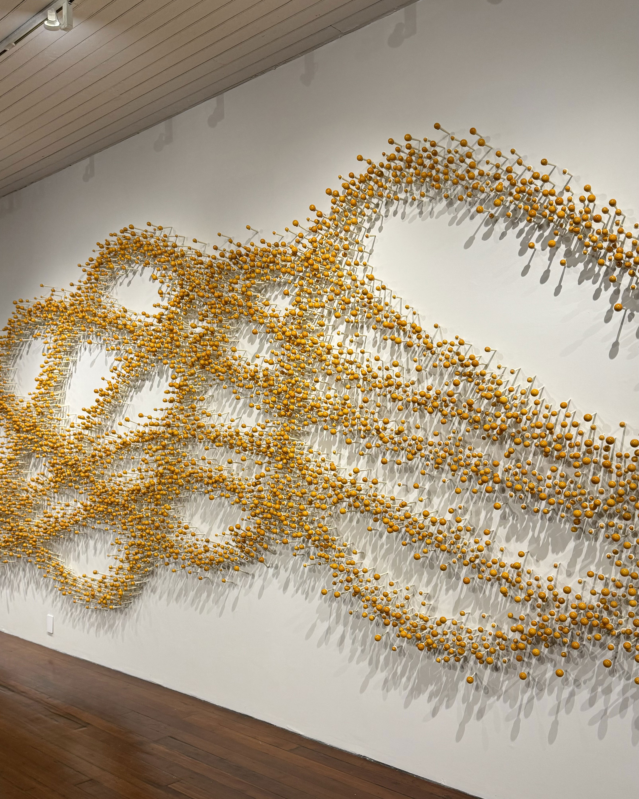

River
 Talwar Gallery
Talwar Gallery

It is a monumental wall installation with thousands of handmade lacquered wood elements. Their carefully orchestrated angles and scale change gently, permeating the wall, with a dynamism and an invisible force that radiates from the center towards the periphery of the installation.